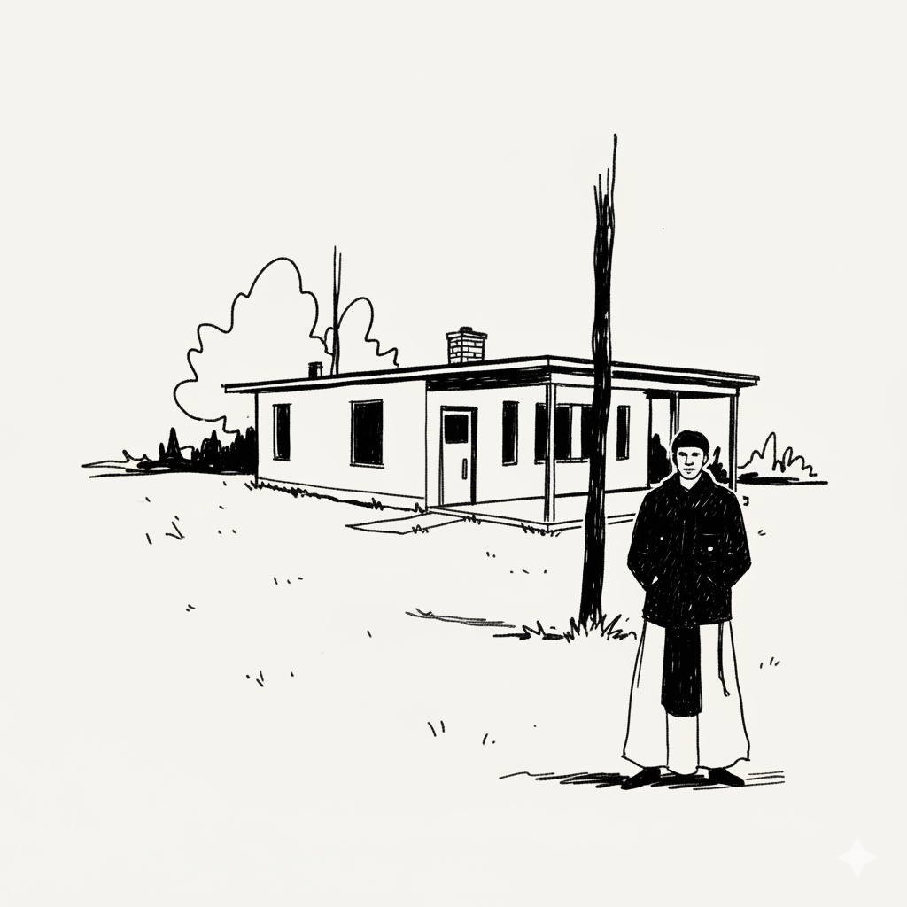

The Cistercian Paradigm
The Order of Cistercians of the Strict Observance (O.C.S.O.), or Trappists, emerged as a reform movement within the Benedictine tradition. Characterized by a rigorous dedication to the Rule of St. Benedict, the Order emphasizes a life of contemplation, manual labor, and communal prayer.

Chronology of the Order
1098: The Foundation
St. Robert of Molesme, seeking a stricter adherence to the Rule of St. Benedict, founded the monastery of Cîteaux.
1112: St. Bernard’s Reform
St. Bernard of Clairvaux joined the order, leading a massive expansion and codifying the austere Cistercian identity.
1142: Cistercians in Ireland
St. Malachy invited the Cistercians to Ireland, leading to the foundation of Mellifont Abbey in Louth.
1664: The Trappist Reform
Abbot de Rancé implemented the "Strict Observance" at La Trappe, emphasizing silence, manual labor, and austerity.
1832: The Irish Trappist Branch
Re-establishment of the order in Ireland at Mount Melleray and subsequent foundations.
2026: Contemporary Renewal
The Order marks a new chapter with the formation of the new Trappist community, continuing the tradition of contemplative life in the modern era.
Location Map
Detail Analysis
| Name | County | Date |
|---|